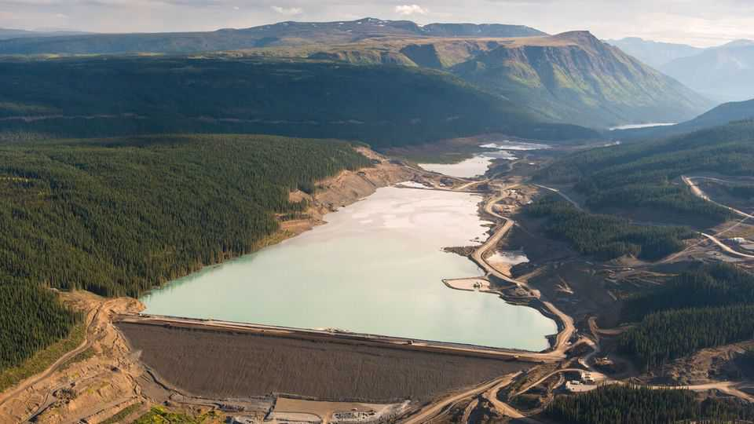

Americans and Canadians are squabbling over mines
The frontier complicates disagreements between indigenous groups
July 9th 2026

Twelve YEARS ago members of the indigenous Tahltan Nation blocked roads in British Columbia (BC), in Canada, to stop a copper mine opening on their ancestral land. The mine went ahead—but the Tahltan won big concessions. Today the copper operation, dubbed Red Chris, provides them with hundreds of jobs and millions of dollars in grants and royalties.
Now Newmont, the operator, is preparing a big expansion of the mine. It has agreement from the federal and provincial governments (on July 2nd the government of Canada said it would invest C$500m, or $350m, in the project). It also has the Tahltan’s approval. All this seems like a success in asserting hard-won indigenous rights. But while that is true for the Tahltan, indigenous groups across the nearby border with the United States fear disaster.
Mining is surging in BC’s mineral-rich “Golden Triangle”, driven by soaring demand for critical metals and Canada’s push to build up domestic industries in the face of Donald Trump’s tariffs. The boom has effects beyond Canada’s frontiers. Red Chris is one of at least eight proposed or operating mines in BC on headwaters of rivers that flow into the lands of indigenous people in Alaska. They do not share in the profits and get no say in how the mines are run. But they worry toxic mining waste will wash down their rivers.

Red Chris is on a tributary of the Stikine River, which flows into the Pacific Ocean near the Alaskan town of Wrangell (see map). The river runs between snow-crowned mountains, their flanks thickly furred with spruce and pine trees. Bald eagles fly overhead. A strip of cut-down forest on either side of the river is the only marker of the border.
The Wrangell area is home to the Tlingit people. Most houses in town have a freezer packed with salmon from the Stikine, as well as meat from deer and moose that are hunted along its banks. The river also sustains old practices such as harvesting oil from small eulachon fish. The mines jeopardise this, says Coven Petticrew, a Wrangell Tlingit. “It could destroy what little is left of our way of life.”
The miners say they are “committed to environmental stewardship”. The Tlingit and neighbouring groups such as the Haida and Tsimshian do not trust them. Several watersheds feeding rivers flowing from Canada into Alaska have in the past been contaminated by industry, to varying degrees. Wrangell residents are quick to mention a 2014 tailings-dam rupture at another BC copper mine, which spilled waste into creeks and lakes.
The Tlingit, Haida and Tsimshian’s historic territories include areas that straddle the border. Those living in what is now Alaska believe this should grant them a say in what happens upriver. They have petitioned the Inter-American Commission on Human Rights to investigate the mines. They have filed a suit in BC’s Supreme Court claiming they have the right to be included in decision-making.
The Alaskans are not mad to think some over the border might be sympathetic. Canada, and BC in particular, volubly promote indigenous rights. Many public gatherings begin with a land acknowledgment recognising First Nations. In 2019 BC passed a landmark law giving indigenous nations broad rights to be consulted on legislation and other issues. And some relevant legal precedent exists: a 2021 Canadian Supreme Court decision on a hunting-rights case ruled that American members of an indigenous tribe with members on both sides of the border could be considered indigenous Canadians.
The Tahltan are unmoved. They do “not recognise the claims of Alaskan Tribes in Tahltan Territory and view them as an encroachment on our title and rights,” says Tahltan Central Government’s president, Kerry Carlick. The provincial government is taking a similar line. In April it passed a law explicitly locking Alaskan tribes out of the most important environmental decision-making processes.
The Alaskans are continuing the battle in court. They see the stakes going up. In December the Tahltan gave their consent to another new mine on an Alaska-bound river—in exchange for $10,000 per member and the promise of more to come. ■